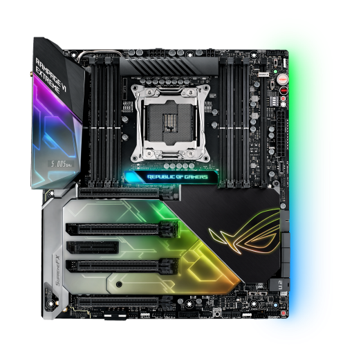
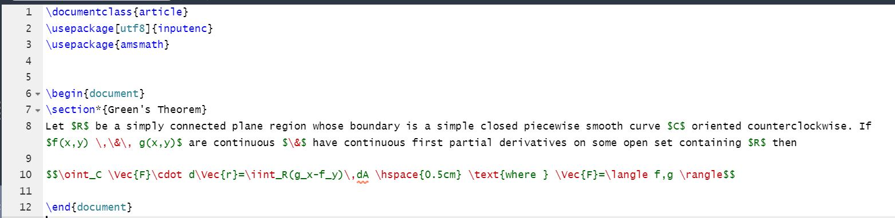
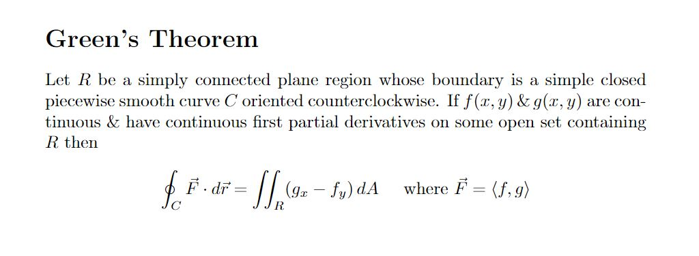

I started browsing around the small form factor PC forums online, to the detriment of my wallet, a few days back, and I was inspired to upgrade my own system to an SFFPC.
My computer case right now is massive, and I am very sad that I can't put it on my desk to have a cleaning workstation look (my original intent was to do custom water cooling in my massive PC, but then I realized that I don't hate my money that much). My little brother happens to be upgrading his computer at the same time, so this is the perfect time for him to get hand-me-down parts from me as I upgrade all of my components. The big things I am upgrading are the CPU, its cooler, the motherboard, the PSU, and (obviously) the case.
CPU
The CPU upgrade is the only real thing that will substantially change performance. I am upgrading from an R5 3600 to an R5 5600X instead. Nothing too dramatic for what I use my computer for (a lot of geoguessr lately). This is more for the sake of my brother getting my 3600 compared to his ancient anniversary edition Pentium G3258 that was in my first PC. All the other changes are for the sake of size.
MOBO
The motherboard (undecided which model to pick yet), in addition to having to have a new chipset to accommodate the new Ryzen processor, will need to be M-ITX to fit in the new case. Another thing to consider when picking the new potential motherboard leads us into our next component.
Cooler
I am sad to be abandoning my Dark Rock Pro 4 as it has been an amazing cooler for me for the last few years, but there is no room for its dual cinderblock of a heat sink to fit in a dainty SFF build. That is why I am looking at the Noctua NH-L12S to cool my processor instead. In addition to Noctua being a German-speaking company like Dark Rock, they also make some awesome coolers that can be constricted to more reasonable sizes. The drawback is that the L12S hogs all its space in the xy-axis (with respect to the motherboard) instead of the z-direction that the Pro 4 takes up. This meant that during my motherboard search, a whole lot of my possible contenders were cut out because gaming manufacturers can't help but make massive, gaudy shrouds that not only are modern monuments of humanity's hubris but also are in the way of the heatsink. I was able to find a few manufacturers that were light on the RGB and had compatible options for me to consider.

Huxley never could have anticipated that soma would be in the form of rainbow vomit on PCB...Noctua tearing me down on the eve of Valentine's day <\3
PSU
The PSU story is not as boring as it may seem. Sure, my current CX550M is too big to fit in an SFF system, but there is another issue that means little in an ATX midtower behemoth but means the world to a puny M-ITX system: cables. The SF750W has presleeved, shortened cables that perfectly fit a little system.
Case
Lastly is the case which inspired this fit of consumerism in me. The FormD T1 is a buji M-ITX case that is consistently put at the top of the SFF case hierarchy. A neat feature is that it comes disassembled during shipping so you can build up the case as you build your computer so the sides don't get in the way. It also has this crazy reconfigurable midsection that divides the motherboard from the ribboned off GPU to be able to fit a three slot GPU inside (at the expense of room for the MOBO on the other side of that midsection). Though, because of its status in the PC building community, it is very hard to get. It also doesn't help that FormD has continually been delaying its release of the T1 version 2. I probably won't be able to get my hands on it for a few months. My friend is lending me his M-ATX case that he doesn't use to be a temporary case until I can either get it at MSRP soon (doubtful) or just find it second-hand at a hopefully not too terrible price.
I don't have any photos to share yet as none of my parts have had any time to get here yet, so here is a spreadsheet I made to price some stuff out. I will make sure to make an update post (with pictures!) when my computer or my brother's has been sufficiently upgraded. Auf Wiedersehen!
Posted: 2022-02-12
A Frosty Stroll
Neat photo I took around the beginning of January. The original composition was very cluttered, but I couldn't pass up on this interesting lighting, so I just cropped down. It's also not in black and white or artificially devoid of color. It was just gloomy that day.
Posted: 2022-02-04
LaTeX Milestone
\begin{article}
I have put in a lot of time learning LaTeX for a good little while. LaTeX is a document editor mostly used by STEM majors for its incredible ease in writing equation heavy text. It also has some use by linguists and scholars writing in Sanskrit or Greek or other complex multilingual documents (at least, that's what Wikipedia says). I wrote up a few little projects and proofs to build some proficiency but didn't think I had the ability to try to write an entire assignment.
Fortunately, my vector analysis professor happens to be awesome, so she sent me the .TeX file for a previous assignment she wrote. I used that and Google as reference material to write up my whole assignment. I feel like a million bucks and am hoping to make it a habit to write all my math assignments like this.

Figure 1: Markdown done behind the scenes

Figure 2: Gorgeous equations that come out
The .TeX file for this assignment is posted at the end of this article to mark this milestone in my math career but also for any STEM major or curious person looking to get into LaTeX that wants to look over some sample code. Good luck, everyone, and remember to use "\," to give your terms some breathing room.
I hope everyone had a very jolly holiday season. With the new year here, I wanted to put down some projects and goals I want to achieve.
Make a History Podcast
This is something I have put off for way too long. I have been trying (but not really) to
organize a podcast with my old high school history teacher, Mr. Sanborn, to talk about
our thought on political history books and how our thoughts contrast with our own
backgrounds.
Continue My Photography Account
I have a photography account on Instagram, @angels_cool_photos, where I post photos
that I take during my commutes or while I walk around with my friends. I have been
pretty consistent with posting ever since I got my camera in September, but winter and
early sunsets have really hampered my output lately. I am hoping to continue my
photography adventures and keep posting as spring emerges.
Taken near Colectivo Coffee on the Lakefront
Read More and Write My Thoughts About It
I read some great books in 2021. Some notable highlights were The Trial, Norwegian
Wood, and The Road to Wigan Pier. I am hoping to substitute my time wasted online
with more reading instead. I don't just wanna fill out a Goodreads profile though. I want
to sit with my thoughts more and have something to say afterwards. That is why I am
also trying to make myself write after reading to hopefully come up with more unified
ideas about the book after putting pen to paper.
Learn Deutsch
I am probably going to Germany this summer to visit my history friend and go on
a castle/ruins adventure, but I will sound like an idiot if I keep coasting along with my
German studying. I have grammar books, vocab books, translation and frequency
dictionaries, and German friends very willing to help me learn their language, but I have
contended myself to just Duolingo to maintain my streak because I am too intimidated
to restart actually learning my studies. Ich bin sehr dumm.
Learn More Math
At the end of the day, I am an actuarial science student first and foremost. I need to
keep forcing myself to perform well in my classes and, more importantly, learn about
theory and proofs on my own time. I can't rely on my algebra and operation skills to be
a mathematician just like I can't rely on knowing when to go at a traffic light to be a
good driver.
Keep Posting on This Site
Last time I posted on here was like September, so I guess I need to fix that to organize
my life a bit more and force myself to finish projects and post them on here.
Be More Productive
This is probably the most important goal on this list and ties in with all the others a lot. I am privileged to have access to so much information with professors, mentors, and
friends to help inspire me to learn these things. I shouldn't use this time where I have so
much freedom and opportunity wasting away watching YouTube or going on social
media or any of these other time suckers. I have done my best to limit my social media
and online use as much as possible while still having somewhat of a social life. I need to
force myself to build up a larger amount of time before I lose focus. That is my biggest
goal for this year: to make this year actually feel like an entire year instead of just a new
number that I change on my dates every so often.
Well, hopefully writing this down will make me care more about all this. I hope my self-coercive
language didn't give you the impression that I don't like doing any of these things. I love my hobbies and
interests very much and have a lot of fun doing them. It's the first five minutes of trying to do them
where I have difficulty. But like a car going seventy over a speedbump, I soar after those five minutes. I
hope your year of 2*3*337 CE is awesome.